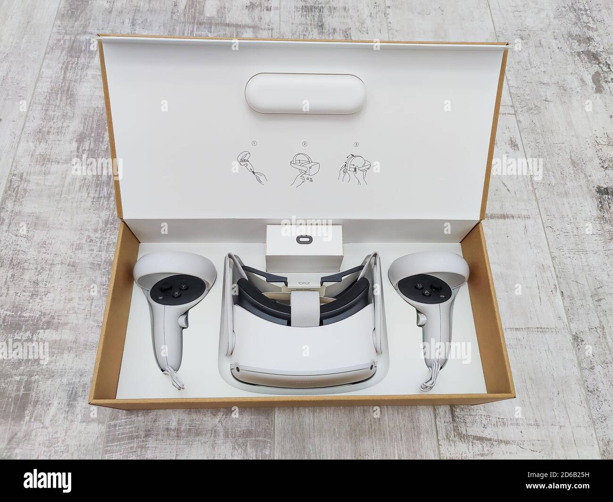

Summary
I spent 7 days designing the package for the unrealeased Apple Vision Pro that is expected to be released in early 2024. This packaging should resemble the style Apple has instilled within all of their recent packages for their products. The package should aim to be aesthetically appealing, simple, intuitive to the user, and aim to be sustainable through the use of its material selection and design.
The package was designed using the scare resources that describe the product and its respective accessories. Regarding the accessories, an assumption was made for this package that there will be a 30W power adapter and a 1 meter long USB-C cable along with the expected battery and power tether. Regarding the headset itself, an assumption was made that the headset can be broken down into 4 components: the main display, a light blocker, audio/charging bands, and the headband.
Including the various components, the final dimensioning of the package is 308mm x 248mm x 168mm (LWH) and weighs 2.346 kg or just around 5 lbs.
With these assumptions and design criterias, the final design of the package can be seen in the animation below.
 Apple Packaging
Apple Packaging
The package was also designed using a tolerance and structural analysis to ensure that the components arrive safely through the various environments that it would be exposed to by shipping and that the components within the package can be removed as satisfying as they are in other Apple packages.
 Apple Packaging
Apple Packaging
The package is created using a laminated fiberboard and various molded pulp trays in the hopes of creating something that is aesthically appealing, easy to assemble, and most importantly, sustainable.
Although much was accomplished in the seven days of this project, I would like to revisit the pacakge to spend more time on details that include the embossed wrap of the outer shells as well as creating the drawings for each component. I will most definetely revisit when the Apple Vision Pro is released and unboxed around the world.
Inspiration
I have always loved the packaging that surrounds every Apple product I have owned. Every detail is rigorously thought through, as the experience of unboxing the product is like no other.
Recently, I graduated from U.C. Berkeley with a Master of Engineering degree in Mechanical Engineering, specializing in Product Design. I believe this project is an excellent opportunity to put my knowledge to the test, as the packaging for this particular product has yet to be released. Moreover, I have set a personal challenge to complete this project within 7 days. Throughout this document, I aim to take you along on my entire journey and share my process with you.
Day One
When initiating this project, especially considering the demanding timeline, it is crucial to establish a set of early concepts and requirements that I aim to fulfill within the seven-day period. This will help me stay focused and prevent any digressions that deviate from my intended goals.
Project Goals
A well thought solution should have considered the following:
1. Unboxing experience: How will the user interact with it?
2. Critical dimensions and tolerance stacks
3. Material choice, associated enviornmental impact and cost impact
4. Design for manufacturing: What processes/equipment are required to make and assemble parts?
5. Engineering Analysis of Design, including:
a. Force required to release or extract components from packaging
b. Ability of components and packaging to withstand drop and other high impact events
c. Key Design Risks
Package Contents
The packaging of the Apple Vision Pro, like any other Apple product, will not only include the main product itself but also supporting items that ensure its functionality. Based on my initial assessment, the following are the items I anticipate to be included within the package:
- Apple Vision Pro Main Display
- Apple Vision Pro Headband
- Battery Pack
- Headset Tether
- USB-C Cable
- USB-C Power Adapter
- 10-Page Documentation Pamphlet
 Apple Vision Pro
Apple Vision Pro
Day One Goals
Today's goal revolves around research. My objective is to gather as much information as possible regarding the Vision Pro.
Since the product has not been released yet, I anticipate that obtaining the necessary information might be more challenging
compared to existing Apple products. However, I remain determined to gather as much relevant information as possible within
the given constraints.
Below are a few things that I will be looking at today:
- Product Research
- General Information
- Dimensions
- Materials
- Weight
- Past Apple Product Research
- Unboxing Experience
- How they handle generic components (power adapters, chargers, etc.)
- Spacing of Components
- Unique Features
- Materials Used
- General Design
- Research Competitors
- Meta Quest Headsets
- Oculus (Pre-Meta Acquisition)
Vision Pro Research
General Information
The Apple Vision Pro spacial computing headset was announced on June 5th, 2023 during the annual Worldwide Developers Conference. This headset will be available in early 2024. This headset is Apples take on Virtual/Augmented Reality.
 Apple Vision Pro
Apple Vision Pro
Apple spent the last segment of the day one conversations uncovering the numerous specs the product has. It seems that Apple went all out with making the headset look as luxurious as possible. It definetely was clear that they would be targeting the luxury and early adopter market as the price was $3500. This approach is extremely different from the approach their competitor Meta has taken. It is fitting for Apple as they seem to think that before making something that everyone can afford, they should make something that everyone wants.
Product Specifications
As previously stated, since the Apple Vision Pro has not been released yet, my sources of information are limited to what Apple has disclosed in their keynote speech and the experiences shared by individuals who have interacted with the headset. Therefore, I will do my best to present the information I have gathered, clearly distinguishing between confirmed facts and speculative details.
Dimensions and Weight
- General Headset Based on the information I gathered online, it is speculated that the Apple Vision Pro headset weighs approximately 454 grams. For the purpose of this project, I will consider this weight as a reference. Obtaining precise details about the dimensions of the headset proved to be challenging, as there is no definitive information available. To overcome this, I resorted to using the AR file provided by Apple on their website, which discussed the product. Based on my analysis, the headset has an estimated height of around 90mm, a width of approximately 160mm, and a total depth of roughly 250mm from the front of the housing to the back of the headband. The front glass and aluminum housing measure approximately 40mm, and with the light blocker attached, the depth increases to around 90mm. Regarding the properties of the headset's components, I will rely on my ability to compare the product to other existing Apple products based on its appearance and use case as a wearable.
- Front Housing
- Glass Front Panel For the front glass panel, I am presuming that the glass has similar properties to that of the Apple watch. In the keynote, it is said to be a laminated glass which may add some more structural integrity. However, for the sake of this project, I will be assuming it has the properties of an Apple watch that I will be using when doing further analysis.
- Aluminum Frame The aluminum frame sits behind the laminated glass and serves as a key structural component that houses all of the internal components. With this being a wearable, I suspect that the Apple Engineers who designed this would have aimed to make this as light as possible. For that reason, I am suspecting that this aluminum frame has the same properties as their notable Airpods Max headphones who utilize a aluminum to form the housing of the headset.
- Headphone and Chargine Band The headphone and charging band are connected to to the side of the aluminum frame and feed power and receive audio from the headsets internals. When I first saw these components, I immediately compared them to the existing Apple Watch sports band. This sports band is made of a durable silicone. These are the properties I will be using for the project.
- Light Blocker The light blocker will be one portion along with the headband that will be in constant contact with the user. For that reason, I suspect Apple designed this product with breathability and maleability in mind as it should keep the user fresh during extended use and fit ther user extremely well to prevent light from slipping in. This maleable fit and breathability is something I suspect the Apple Airpods Max cushions have for the best audio experience.
- Headband The headband is the other component that will be in constant contact with the user. This part was described to be designed with breathability and flexibility in mind. From the looks of it, I am comparing it to the trail band of the apple watch which provides sufficient flexibility, durability, and comfort.
- Power & Cables
- Battery To power this headset, Apple has landed on a external battery apporach that aimed to reduce the weight the user would be forced to have on top of their head. In doing so, it will allow the user to wear it for longer durations. From what I could gather, the battery has enough power to sustain the headset for 2 hours and is suspected to be ~2,000 mAh. It is also suspected to weigh between 200-300 grams and will be settling for 250 grams for this project. The dimensions of the battery pack are also unclear, but have estimated them to be 65mm x 150mm x 25mm for this project.
- Power Tether The power tether will be used to connect the headset to the external battery pack. It seeems to be made as Apples woven cables which are being seen in as the chargers of recent Apple products. I have estimated its length to be ~ 630mm.
- USB-C Power Adapter The USB-C power adapter that I will be using will be the one that comes standard with all new iPads.
- USB-C The USB-C power cable will be the one that comes standard with all new iPads which is at a length of 1m.
The Apple Way
I dedicated a significant portion of my day to watching numerous unboxing experiences of Apple products. The purpose behind this was to observe their quality and meticulous attention to detail, which is precisely why I chose to undertake this project. It became evident that every aspect was thoroughly considered. Now, I will outline the various features commonly found in Apple products that I aim to cover:
Product Protection
I have never opened a Apple package to uncover a damaged product. It should be able to withstand potential impacts, shocks, or vibrations that can occur during shipping.
Simplicity
In the products that Apple have, the products and packaging have an emphasis on simplicity. They are minimalistic, clean, and really easy to understand. The unboxing experience is straightforward without clutter or complicated opening mechanisms.
The Shell
If you have every unboxed an Apple product, you can probably picture the snow white box covered in a sleek plastic wrap or having the little tab on the underside that allows for the top cover to be removed.
Fit and Function
My favorite part of opening an apple product is the when I remove the lid of the product packaging. It seems that Apple has designed packages such that they remove with a phenomenal feel and audio response that can only be possible with the tolerances that the package has within itself.
These tolerances are present throughout all aspects of the unboxing experience. From that initial cover removal, to the package being lifted from its perfectly designed slot, these tolerances are designed to be extremely precise to create a great feel, but also keep the product in a stable position from the factory to the user.
Sustainability
This has been more present in the most recent years as Apple is aiming to be 100% carbon neutral for its supply chain and products by 2030.
With that being said, the materials used should be recyclable and aim to reduce excess packaging.
Branding
If you were to look at a shelf at Best Buy, you can always tell which products belong to Apple. This is due to their profound brand identity. With the package I design, I need to stick to their standards so that it is visually appealing, sleek, and elegant.
Competitors
With this product, Apple has ventured into a market that has been owned by a variety of other companies. The main being Meta and Oculus (who now belongs to Meta).
Below is a image of the unboxing of the Meta Quest 2. To get to the stage that is seen, the user removes a sliding cover which then allows the user to open the box. Although this layout of the Meta Quest 2 makes sense, I am not a fan of how cluttered that middle section is. In that section there is a attachment for users with glasses, documentation, and the and other cardstock like components that attach to the headset to keep it secure.
 Meta Quest 2 UnboxingHaving seen this unboxing experience, and not being a true fan of its aesthetics, I am pretty sure that I want to orient the front of the headset to the user so that it has a cleaner look to it and is more engaging with the user.
Day One Reflections
After spending the day researching the Apple Vision Pro, Apple unboxing experiences, and Apple's competitors, I feel that I have a good idea of the approach that I want to take for creating the packaging for the Apple Vision Pro. I am sure that I will be getting a further understanding of the headset. I am excited to see what I will come up with.
Day Two
Day Two Timeline
Brainstorming/Concept Development
- Opening Outer Shell
- Inner Layer One
- Inner Layer Two
- Product Shell Design
Opening Outer Shell
The outer shell of this package is one of the most important sections. The reason is that it is the first part that the user sees. It is the segment that initially catches the attention of the user.
In brainstorming the various different layouts of how this shell might look like, I took inspiration from various apple products. The main components that I figured that I should capture are the product being highlighted on the top face of the shell, the name of the product being placed on the front and back side, and the apple logo on the right and left side.
IdeationWith these considerations in mind, I contemplated the most appealing view that would effectively showcase the product in a manner I deemed suitable. After examining various arrangements, I decided to make the laminated glass the prominent feature on the face of the product, as seen on the landing page. However, I also wanted to display the product with the screen illuminated, as many Apple products with displays have this feature on the package face. Regrettably, I was unable to find an image that I deemed suitable for this purpose.
As for the other faces of the shell, I landed on using a normal black apple logo, along with 'Vision Pro' in the SF Pro font.
 Outer Shell Concept Selection
Outer Shell Concept Selection
Initial Layers
The opening layer is the first layer that the user sees once that they remove the oh so satisying frictioned outer shell.
For this layer, I contemplated what I would want the user to see. The two different methods I landed on was a documentation packet that is included in all Apple products, or the user viewing the product.
 Package Inspiration
Package Inspiration
As I brainstormed, I ended up deciding how I would want the headset revealed to the user. In doing so, I determined that with that orientation, it would be best to have a 'protectant' layer above it to prevent any damage to the laminated glass. This resulted in the decision of having the documentation packet placed above the headset and be the first layer of the package.
 Layer One and Two Selection
Layer One and Two Selection
With this selection, I was able to then begin visualize the next layer which would show the headset itself. Ultimatelym, I decided that the headset would be held in a shell that resembled that of the airpods packaging.
Airpod ShellThis shell holds the product well and provides the user with an area surrounding the proudct for a more seamless removal as they are able to place their fingers there. However, to make this work, I had to establish a pretty key assumption. This assumption is that the audio and charging bands are removable and are expected to be connected by the user as seen with the Apple watch products. This assumption is possible as within the WWDC keynote, there are several frames where the product is displayed without those bands.
 Audio Band Assumption
Audio Band Assumption
Aside from assisting in the packaging sense, this assumption also allows apple to easily have boxes with different colored bands to appeal to those with different styles and such.
With this assumption, the product shell was ultimately decided to hold both the main device itself as well as the light blocker. This would allow the light blocker to be easily swapped out at the Apple store if needed as it is suspected that Apple will provide various options for the optimal fit to the user.
 Shell Design
Shell Design
Day Two Reflections
Today gave me a greater look into the details that Apple packaging holds. I was able to determine what the general design of the outer shell and the first two layers that the user would see would look like. I only have a few concerns in the designs I made. Particularly in the shell that is holding the headset itself. The concern is in how the user would be expected to remove this shell to expose the next layer that I am anticipating will hold the remaining accessories. I will tackle this problem once I have a greater idea of how the accessories could be laid out based on their dimensions.
Day Three
Day Three Timeline
Brainstorming/Concept Development
- Inner Layer Three
- Layer Two & Layer Three Interaction
Inner Layer Three
The third layer is what the user will be exposed to when they remove the shell that holds the headset itself. This layer should hold all of the accessories that will allow the headset to function. These accessories include an external battery, the power tether, the headband, the audio/charging bands, a 30W power adapter, and a 1 meter long USB-C cable.
For this layer, I took to viewing how Apple typically packages their accessories. What I found is that they are usually laid out in some symmetrical format that is in line with the users perspective when opening. Each accessory that is also wrapped in some fashion. For example, the wires tend to have a cardstock like paper rap that keeps them neatly wound. Other accessories would be covered in a foggy plastic wrap that was easily removable. For some other accessories like the bands in the apple watch packaging, they would be put within a box packaging that resembled the box that would hold the documentation of the product.
Accessory InspirationWith that being said, I chose to wrap the wires and power adapter that would be in this layer as they have typically been done in other packages. As for the headband and the audio/charging bands, I chose to package them within a seperate boxes. The reason for the decision is that I suspect Apple selling various headbands and audio/charging bands. Having the seperate boxes would make the swapping of the styles much easier for those that are assembling the packages. Also, having them in their own self contained boxes would allow for the layer to be more aesthetically appealing and designed with symmetry in mind.
With these design decisions made, I was then able to create rough sketches that would allow me to better visualize the layout.
 Accessory Layout
Accessory Layout
Ultimately I felt most comfortable with the option that is circled. This option ensured that the Apple logo on the battery remained upright, and felt the most symmetrical. This layout also allowed for the best interaction between the second and third layer as the tether would be placed within the light blocker portion of the second layer. The tether cable will have a wrap on it such that it is exposed upon removing the product from the second layer to allow the user to lift the tether and thus the second layer from the package to expose the third layer.
Although I am satisfied with this positioning, I will be making the final decision in the coming days as I beign modeling the package as it will give me a better idea of the dimensions of each product and how they fit within the space I decide.
Day Three Reflections
With the ideation I was able to complete today with respect to the third layer, I am much less concerned with the issues that may arise with how the user would go about interacting with the package. I am now only concerned with how I could best utilize the space to ensure that it is optimized for minimal waste while still being aesthetically appealing to the user. In the coming days, I will begin modeling the packaging to fit the headset and the accessories while keeping manufacturing and assembling in mind.
Day Four
Day Four Timeline
Concept Refinement
- Refined Sketches & Discussions
Outer Shell
Unfortunately, I was not able to dedicate too much time to the project today and was only able to refine sketches of what I thought the packaging would look like.
Beginning with the outer shell. The outer shell would be the first part that the user would experience in unboxing the headset. I chose to resemble other apple packagings. This shell did so by having the product at the top face, the apple logos to each side, and the product name in the front and back faces.
Outer Shell SketchDocumentation
The next view of the unboxing experience is the documentation packet. This packet will display 'Designed by Apple in California'. This packet would be able to hold all of the legal and informational content for the product as well as serve as a protection layer for the headset itself.
 Documentation
Documentation
Vision Pro
This third layer is the main layer of the product as it will be the first viewing of the product to the user. I chose to orient the product this way as it is simple as seen in other Apple packages.
This product is embedded within a shell and has a rim surrounding it that is large enough to put fingers around the edge and lift up the headset from it.
 Vision Pro View
Vision Pro View
Vision Pro Shell
The shell that is holding the headset is a vital component to the seperation of the packaging. Ultimately, the decision was made to have the tether cable embedded in the middle where there is space within the light blocker. This adds structural integirty as well as makes it the point in which the user can lift the shell to expose the next layer.
Vision Pro ShellAccessory Shell
The accessory shell is what will hold the battery pack, headband, audio/charging bands, 30 W power adapter, and a USB-C cable. This shell aims to be simmple by placing the cable and power adapter underneath the packaging of the bands and headband.
Underneath this shell, I aim to design a carboard cut that will act as a structural support for the shell and the above components.
 Accessory Layout
Accessory Layout
Day Four Reflections
This day of creating more refined sketches has allowed me to better allow me to visualize how I will begin modeling the system. I am concerned with the dimensioning of the system as I do not have truly defined definitions with the headset being unreleased. As I obtain a model of the actual headset and its various components, these sketches will help me tremendously to aligns the systems.
Day Five
Day Five Timeline
Modeling
- Obtain Model
- Model Breakdown
- Model Dimensioning
CAD
For this aspect in my design process, I will be using Fusion 360 to create the models within the packaging. I recently began using this software and have grown to greatly enjoy its simplicity and UI.
I first began by looking through the internet to find a model of the headset that I could use to base my other designs off of. I ultimately was able to obtain the AR file from the Apple website where they marketed the Vision Pro. With this file, I was able to convert it to an object file that can be seen below. With this object file, I immediately found that it was not to scale, nor did it have the colors/materials attached to it.
I ultimately ended up scalling the model by 32 times to reach a front dimension of around 158 mm which was close enough to my original estimate of 160 mm when I initially researched the headset. I then attached some basic appearance properties to the headset to distinguish the different components for later.
The model was then broken down into more components that resembled my initial ideas for the how the product would appear in the packaging.
Model BreakdownBefore I went on to work on the different components that made up the packaging itself, I began modeling some of the other components that would be held by the packaging. In doing so, it will enable the ability to model aspects like the accessory shell around the components. For the headband and the audio/charging bands, I opted to use a box system that surrounds the components to create a better aesthetic to the pieces as they are of a non-uniform shape. Unfortunately, these boxes ended up being black due to the inability to obtain a clear image of these pieces with a white background.
AccessoriesThe next part I tackled was that of the initial shell of the headset itself. As previously mentioned, the shell will hold the headset in a manner that allows the user to easily remove it from the packaging with a rim that surrounds the headset. The headset rests on a edge that supports the aluminum. The shell also supports the headset underneath the light blocker where there is also a place in which the tether rests.
Headset ShellWith this model of the shell, the placement of the accessories on the underside can be explored. I was able to go across the various iterations that I thought would be the best view for the users. With the spacing that I reserved fo rthis section, I ultimately decided that the iteration that initially exposes the battery and the two boxes containing the headband and the audio/charging band. When the user removes the boxes, the 30W power adapter and the 1 meter USB-C cable will be exposed.
Accessory LayoutDay Five Reflections
Today has been my favorite day so far. The reason being is that it has given me a greater insight into the shaping of what the packaging for the product will look like. In creating the shell for the headset itself, I found the value of establishing an order of operations in which the model is created. The order of operations that I selected in modeling it allowed for a minimal amount of extrusions and cuts that was able to tightly surround the headset and the light blocker. Tomorrow, I aim to finish the remaining components of the model and potentially perform some analysis with respect to the tolerances and the structure itself.
Day Six
Day Six Timeline
Modeling and Manufacturing
- Accessory and Support Model
- Manufacturing & Materials Considerations
- Tolerance Analysis
- Structural Analysis
Accessory Shell
With the layout of the shell being decided yesterday, I was able to begin the modeling of the shell itself. The process was very similar to that of the headset shell itself. I used the models of the accessories and the confined space that I was able to work with to determine the precise placement of each part.
I then adjusted these dimensions to account for some tolerance allowance for the part to easily be added a removed. This was also accompanied with the use of numerous fillets as I suspect that the manufacturing press that would be used would limit the ability to achieve 90 degree edges.
Accessory Shell PackagingThe shell also was designed to fit the components as I felt they should be stored. The boxes holding the headband and the audio/charging bands were surrounded in a manner that would allow for their removal using the design of the packaging itself. The area surrounding the battery on the other hand had a rim around it that would allow for the easy removal of the battery which is similar to what the headset in the previous shell had.
Acessory Shell FilledOn the underside of the headband and audio/charging band boxes, there is room designed for the 30W power adapter and the 1 meter USB-C cable. This space was designed to be similar to the spaces that are reserved for them in other Apple packages. These packages would be removed using the cardstock wrap for the cable and a plastic wrap that is typically used for the power adapter.
Accessory Shell with Boxes RemovedCardboard Support
The last aspect that is designed is the cardboard support that sits on the underside of the accessory shell and is the closest component to the underside shell. I chose to design this component using the sheet metal design option of Fusion 360. With the dimensions established within the accessory shell, the material could be molded around it to interact with it by contacting various points.
Cardboard Support and Accessory Shell The cardboard shell is designed to act as a point of support in the various 'floating' locations of the accessory shell. As this part uses sheet metal design processes, the part is able to be fully unfolded where it would be cut out from a a larger sheet of carboard. Cardboard SupportMaterial Considerations
For the outer shells of the box, the top and bottom shells, they are made out of a turned edge fiberboard. This board is made to have solid corners and uses a wrap with embossed images and text on it. For the sake of time, I did not seperate these components on the model I created.
The outer shells and the shell of the interiors are made of molded pulp. This is the same thing that egg cartons are made of. However, the pulp that Apple has been able to use is of a much greater quality.
The other materials that comprise the box is that of glassine wrap which will surround the battery and the 30W power adapter. This paper is known for the foggy cover. The documentation, boxes surrounding the headband and audio/charging bands, are made using a cardstock like paper. To protect the displays on the headset, I expect that they are covered in a PET plastic for a clear look at the displays.
The majority of the packaging is recyclable except for the wrap surrounding the shells to make them be the iconic snow white that they are.
Manufacturing Considerations
The manufactuiring of the main components of the packaging are created using a wet press method. This will take a dry semi-finished fiber product and press it to the desired shape using a mold.
For low quantity products, this method is not preferred as it can be extremely costly to create the molds necessary for the product. However, as Apple rarely releases anything in a low quantity, it is safe to say that this method would be the most desirable for the product.
For the outer shells, the fiber is covered in a sticker like wrap that is embossed with the image of the vision pro and the lettering as well. The process of attaching this wrap to the mold must be completed by hand by trained individual. Other components like the glassine wrap surrounding some of the accessories, will be die cut as well as the paper that will be holding the tether and charging cables together.
In connecting many of these components, the primary jointing method is through the use of adhesives. These adhesives would be applied to the clean surfaces through the use of a roller method where it is then either manually or mechanically attached to other components through the use of press machines.
Tolerance Analysis
The analysis with respect to the tolerance of the system is conducted using a stack-up methodology.
The tolerance stack up analysis that I completed resulted in having to establish some assumptions to the tolerances of the components of the parts that comprise the packaging. With this being an Apple package, I assumed that the tolerances were minimal.
The tolerance analysis resulted in the dimensions to be adjusted slightly to be able to fit comfortably within each other. I am sure that the tolerances could be reduced if the equipment being used to create the package are properly maintained as well as aimed created in an environment that reduces variability in the materials and processes used.
If I were to revisit this project, I would love to explore the statistical areas with respect to the failures that could be expected on these tolerances.
Structural Analysis
With the components within the package weighing a combined total of 1100 grams, I suspect that the final package would weigh and estimated 2.346 kg. Unfortunately, I was not able to determine the properties of the materials that Apple uses. I turned to using the material properties of a bleached hardwood craft pulp. This has a density of 0.52 g/cm^3 which allowed me to arrive to the weight of the package.
With the dimensioning of the current packaging, I am assuming that the maximum number of Vision Pro packages being placed above the headset are 9. The final dimensioning of the package is 308mm x 248mm x 168mm. I was able to find that the average height of the packaging for freight airliners that would typically be responsible for shipping the product. It is around 180 cm. With that and the dimensions of the package, I am estimating that there would be at any time, 10 packages stacked on top of one another at any given time.
That being said, the package should be able to withstand the weight of these headsets and then some. I am establishing a factor of safety of 1.5 to ensure that it will be able to do so. The load that the package will be exposed to was assumed to be a distributed load across the surface.
In completing the analysis, I determined that the package could withstand the forces that it could be exposed to in a freight airliner. In the coming weeks, I may revisit this structural analysis to perform FEA using Fusion 360.
Day Six Reflections
Today I began to see the finishing touches of the project coming together as I was able to model all of the components. I also performed a simple tolerance and structural analysis which revealed some issues that I was able to resolve with a few minor dimensional changes. This analysis proved to be a bit difficult to perform as I am not aware of the manufacturing tolerances that Apple has as well as the material properties of the materials used in Apple packaging. With more time, I would be excited to explore these areas more in depth using various computer softwares and performing some statistical analysis.
Day Seven
Day Seven Timeline
Finishing Touches
- Final Assembly
- Animation
- Documentation
- Next Steps
Final Assembly
With all of the components completed around each other, the final portion of the project is creating a assembly of all of the parts, and an animation to better showcase it. In creating the final assembly, I had to account for the tolerances added within each part so that they fit as they would in reality.
Prior to making the animation, an exploded view of the final assembly is created to better visualize how the components iteract with one another within the assembly.
Exploded Apple Assembly
Animation
This is the first time that I have created an animation in Fusion 360. The only types of animations that I have done have been those of assemblies turning into exploded views of a sort. I thought that it would be really interesting to make this animation almost as it would be seen if it were a commercial.
With that in mind, I chose to open the animation by zooming out from a black screen which would ultimitely be proven to be the Vision Pro and the outer shell of the product. This would then be translated to the beginning of the box being opened and revealing the documentation packet as well as the headset itself. I struglled in determining how I would go about placing the components to be viewed at a later stage. I ultimately arrived to the idea of placing them in a manner that would be square to the main base.
The final animation ended up being around 30 seconds that end by zooming into the headset itself to allow for a loop transition back to the beginning of the animation.
Apple Packaging
Documentation
The remainder of my day was then spent cleaning up the documentation within this website as well as the various drawings and notes that I made on the various devices that I used to design and analyze this project.
Next Steps
This project has given me a tremendous insight into the packaging surrounding Apple products. Although I told myself that I would only spend seven days working on this, I think that it may be interesting to revisit this project with respect to other topics like that of creating the drawings for each aspect of the design for manufacturing purposes. I could also even go as far as looking into the thermal aspects of the design to ensure that it would be sufficient for long voyages in environments that are not thermally controlled. I would also want to remodel the packaging in a more detail as to even create the stickers that surround the shells themselves.
I will most definetely revisit this project whenever the Vision Pro headset is actually released to compare my design with that of what Apple chose to follow.
Project Reflections
This project has given me a profound respect for those at Apple that are responsible for the packages of Apple products. I have also gained a tremendous value in setting deadlines for myself. It kept me working on some of the aspects that I was not too interested in as I knew that it had to be completed and that every second counts. I hope to take on more projects like this in the coming weeks like that of creating a CNC or coding a enigma machine.
I greatly enjoyed this project as it was able to cover just about every aspect of the design process. I only wish that I had access to the manufacturers and suppliers that Apple used to have an even greater understanding to how certain things are completed.